Google App Engine / Go で slack に通知する bot を作った
この記事は書かれてから1年以上が経過しており、最新の情報とは異なる可能性があります
こちらは フロントエンドもくもく会 - 新年LT大会 の、 後半のLT大会で発表した内容を加筆修正しつつブログに起こしたものです。 発表後、うまく動作しなかった箇所などを追記しています。
ざっくり要点だけ知りたい方は、 一番下にあるGAE/Go slackbot のポイントだけ見てください。
動機 - めんどいこと
フロントエンドもくもく会はかなり低コストで回っているものの、 以下の点で面倒だなあと感じることがありました。
- 勉強会関連で何日前にあれこれする
- 参加人数少なかったら告知したり
- キャンセル促したり
- イベントごとにお知らせしてほしい
そこで slack に勝手に通知する bot を用意し、 その辺常に気にするコストをさらに減らそうと思い立ちました。
slack に勝手に通知する bot
- slack https://nfug.slack.com/
- 最新5件を以下に該当するかチェック
- イベント2週間前、2日前、当日、翌日あたり
- GAE/Go (GoogleAppEngine / Golang) で実装
実装方法
GAE/Go (GoogleAppEngine / Golang) とは
- Google Cloud Platform の一員
- Web アプリケーションをお手軽に公開できるプラットフォーム
GAE/Go の helloworld を試すまでの手順
- アカウント登録する、クレジットカード情報が必要（ただし無料枠で対応可能）
- 言語を選択する、ここでは Golang を選択
- チュートリアルに従って dev_appserver.py, gcoud app deploy 相当のことを画面内から行う
GAE/Go の helloworld を試すまでのキャプチャ
多いので抜粋。
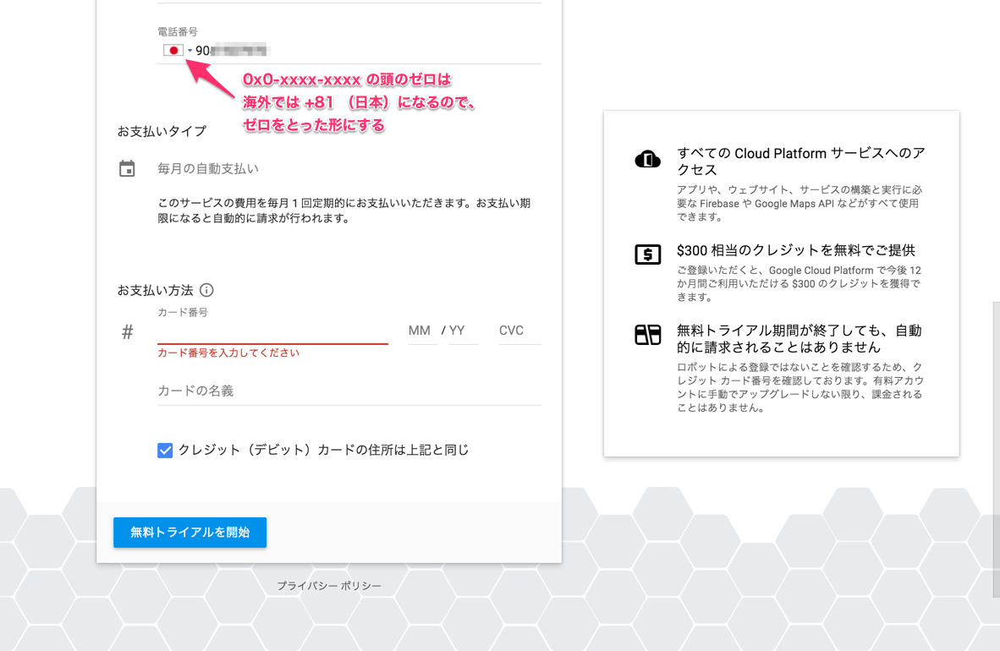
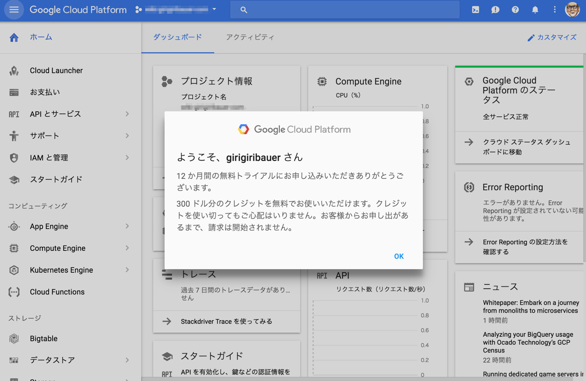
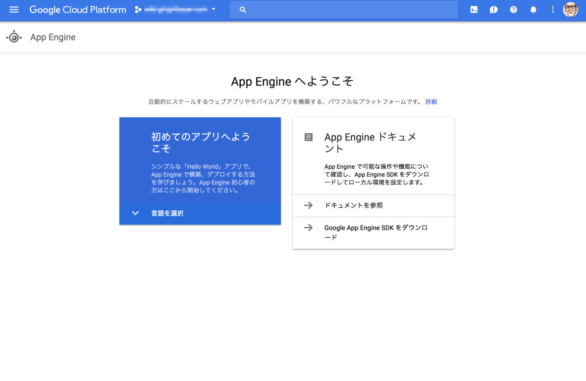
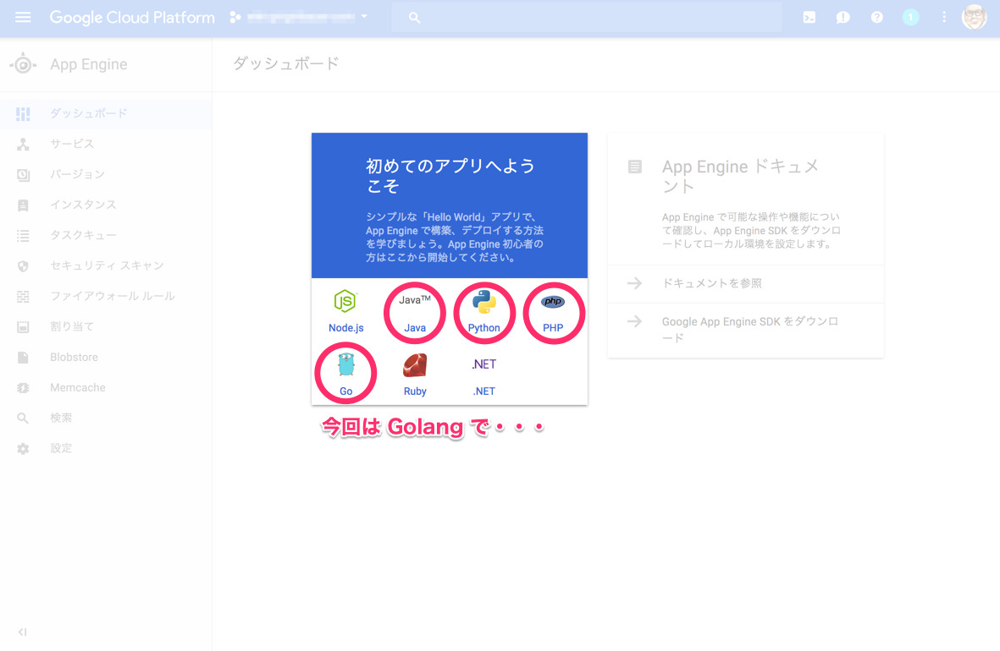
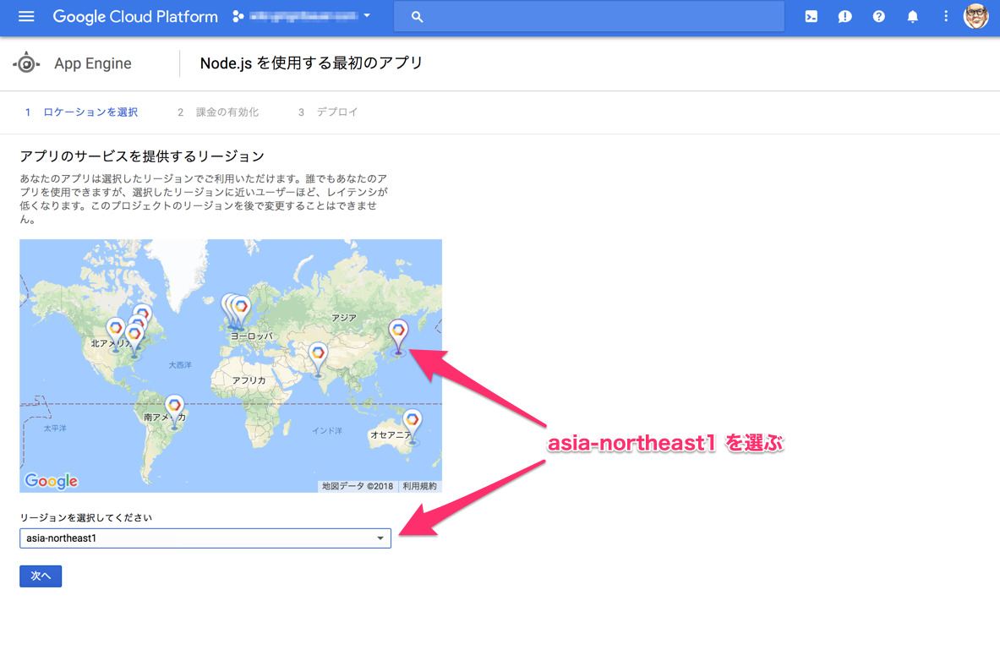
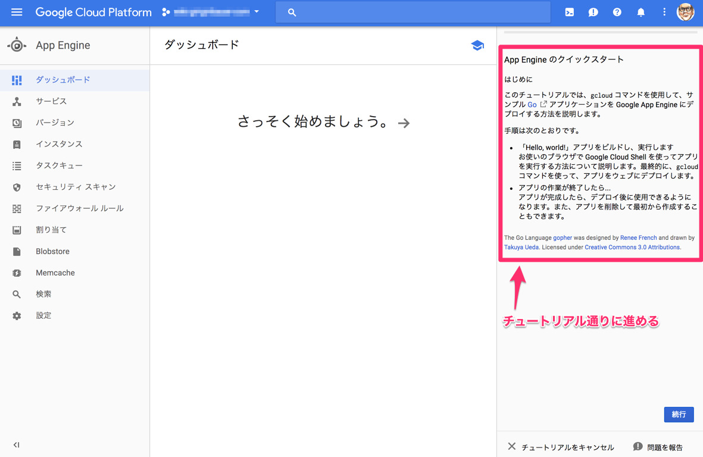
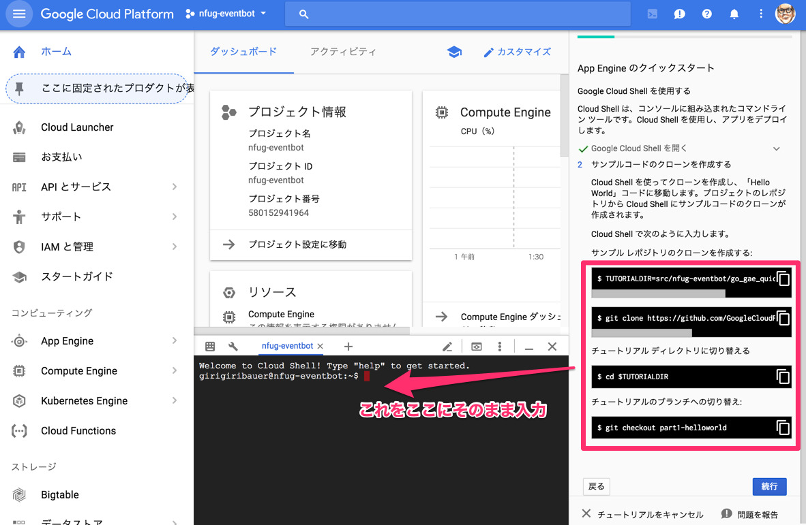
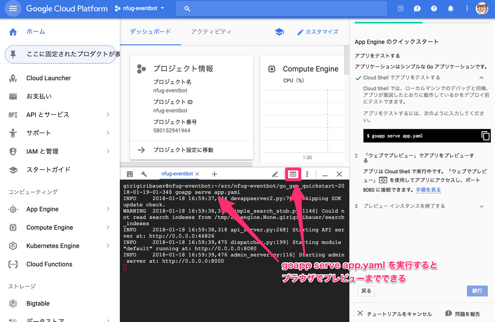
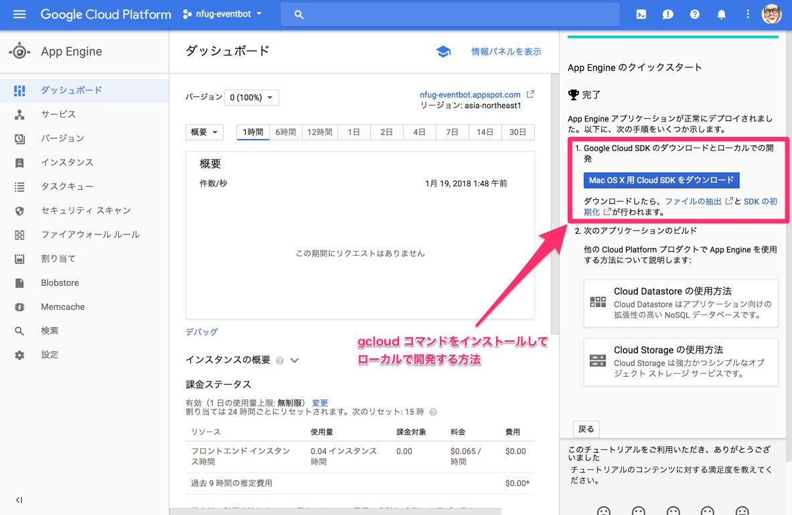
ここまでがチュートリアルでした。
GAE/Go でローカル開発する
さらに、 gcloud コマンドをインストールして、
ローカルで開発を進める手法もあります。
さすがにローカルで進めていかないとしんどいので、こちらの方法で開発を進めていきます。
指示通りにインストールして、
ローカルで dev_appserver.py の実行や gcloud app deploy の実行ができるようにします。
ちなみに dev_appserver.py というのは gcloud をインストールすると使える開発環境用スクリプトです。
インストールの指示通りに google-cloud-sdk/bin にパスを通しておくと使えます。
（gcloud_devsever とかいう名前にすればいいのに・・・）
ソースコード
https://github.com/girigiribauer/nfug-eventbot にあります。汎用性はないです。
追記: cron ジョブの登録について
ドキュメントをもっときちんと読み込むべきだったんですが、
普通に gcloud app deploy しただけでは、 cron ジョブ関連はデプロイされないようです。
その証拠に、Google Cloud Platform の管理画面上から cron ジョブの様子が確認できるのですが、 そこにはどうも何も認識されていないようです。
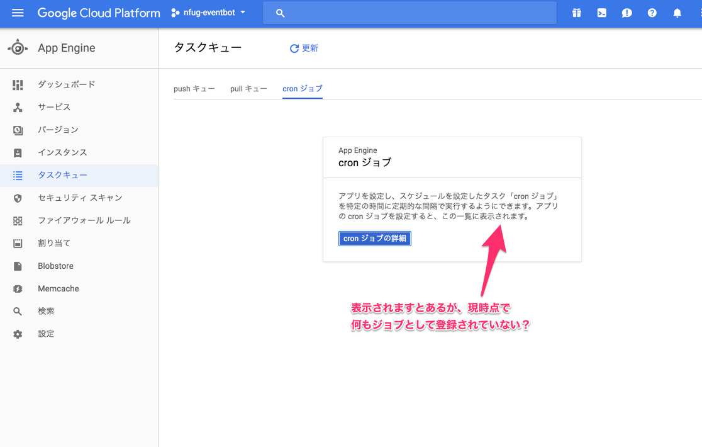
こちらに書いてありますが、 cron ジョブをデプロイするためには、
gcloud app deploy cron.yaml といったように、さらに引数に指定する必要があるようです。
道理で動かなかったわけだ・・・。
https://cloud.google.com/appengine/docs/standard/go/config/cron
これで試してみると、以下のようなメッセージが表示されつつ、 デプロイしますか？と問われます。
descriptor: [/path/to/nfug-eventbot/slackbot/cron.yaml]
type: [cron jobs]
target project: [nfug-eventbot]
でもって再び管理画面見てみると・・・
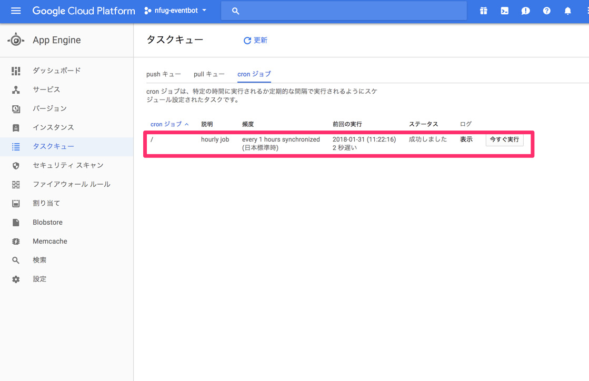
きておったー。
それ以外に疑った点: timezone 周り
当初、これが怪しいと思ったんですよ。 結局違ったんですが、timezone を指定しておくのは（無用なトラブルを避ける意味で） やっておいた方が良いかと思います。
特にグローバルなサービスを利用するときは気をつけておきたいポイントかと思いました。
- Golang の中の timezone 設定
- cron.yaml での timezone 設定
前者は time.Local を設定することで timezone の設定が可能です。
後者は timezone: Asia/Tokyo とすることで設定可能ですが、 そもそも1時間ごとに処理するのに timezone は関係ないし、 これも一番最初にリージョン設定で指定が出来てるはずなので、 ここで問題が起きているとは考えにくかったりするんですよね。（実際違った）
その他気をつけたいこと
GoogleAppEngine の中から外へのリクエスト
Go で外に向けてリクエスト投げたりするときは、通常 http.Get とか使うことになるかと思います。
ただ、GoogleAppEngine の中からリクエスト投げる場合は制限があって、 “google.golang.org/appengine” や “google.golang.org/appengine/urlfetch” などの、 専用のライブラリを使う必要があります。
https://cloud.google.com/appengine/docs/standard/go/issue-requests
こっちを使わないと中から外へのリクエストは投げられません。
どこかから情報を引っ張ってきて加工して出す系の処理は、 大抵これに該当すると思うので、気をつけると良いと思います。 まあこれもドキュメントしっかり読めって話です。
GAE/Go slackbot のポイント
- cron が普通に使えるのは、他のサーバーレスな仕組みだけ使うのと比べるとメリット
定期的に何かやるやつはこっちのが良さげ （逆に応答するだけなら aws lambda とか gcp cloud functions とか使ったら良さげ）=> AWS にも CloudWatch というサービスがあって、 cron っぽく書けるようです。知らんかったー。 ( https://docs.aws.amazon.com/ja_jp/AmazonCloudWatch/latest/events/ScheduledEvents.html )- GoogleAppEngine の Always Free の使用制限に気をつける https://cloud.google.com/free/docs/always-free-usage-limits
- GoogleAppEngine はデプロイが楽（更新してくならここ大事）
- 外から情報引っ張ってきて加工する系の bot は専用ライブラリ使う
- cron ジョブのデプロイはアプリ側のデプロイとは別に
gcloud app deploy cron.yamlと関連ファイル名を直接指定する - ドキュメントよく読む
今回さくっと作ってみましたが、 作るところ自体にそれほど時間はかかっていません。
ドキュメントしっかり読んでおけば問題ないケースがほとんどなので、 要するにドキュメントしっかり読もうってことです。 はい。
まとめ
- 身近なところから自動化・仕組み化していきたい
- ドキュメントしっかり読もう
今回直接アクセスしたら動作しちゃうし、そこまで厳密にあれこれやってないです。 GoogleAppEngine も、一度やってしまえば（必要なドキュメント読んでおけば） 次からは全然時間かからずにデプロイまで行けちゃうんじゃないですかね。かなり楽です。
参考URL
- https://cloud.google.com/free/docs/always-free-usage-limits
- https://blog.apar.jp/web/6912/
- https://cloud.google.com/appengine/docs/standard/go/issue-requests
- https://cloud.google.com/appengine/docs/standard/go/config/cronref
- https://connpass.com/about/api/
- https://qiita.com/shiena/items/dee4d10947bebb7e92d4
この記事は書かれてから1年以上が経過しており、最新の情報とは異なる可能性があります